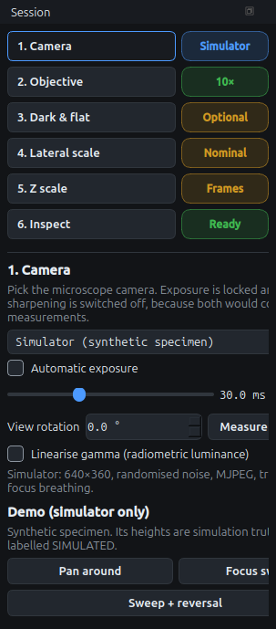
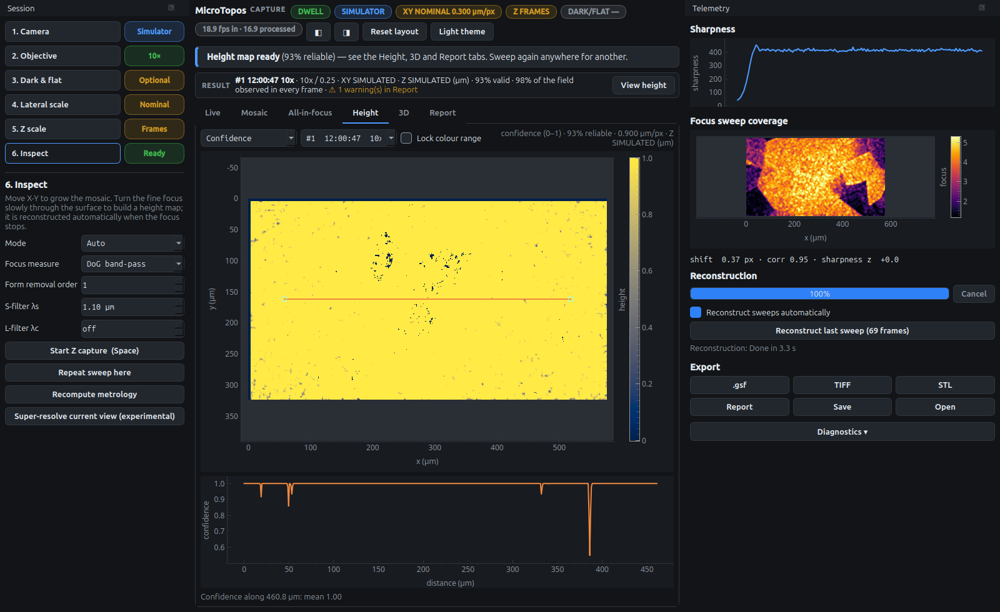
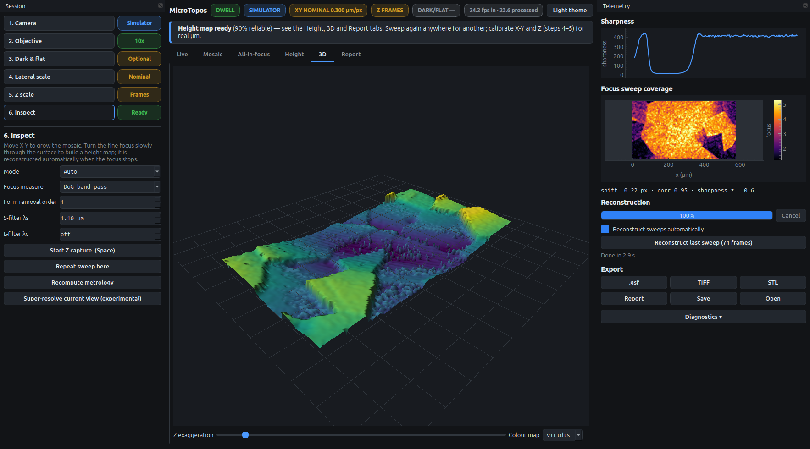

A height map from a focus sweep
A microscope objective shows only a thin slice of the sample sharply: its depth of field, about 10 µm at 10×/0.25 and under 1 µm at 40×/0.85. When you turn the fine focus through the sample, every point becomes sharpest at the knob position matching its height. MicroTopos measures the sharpness of every pixel in every frame and fits the peak. The result is a height map, a confidence map and one all-in-focus image.
Before you start
-
Select the right objective in step 2, or press 1 to 4. It sets the focus windows and the roughness filter.
-
Keep exposure manual (the default). Automatic exposure changes the brightness between frames and corrupts the sharpness comparison.
-
Turn Show clipped pixels on (the default) under the Live view. Magenta stripes mark saturated pixels: they have no texture, so there is no focus signal there. Lower the exposure, or use Set once in step 1, until the stripes are gone.
The sweep
-
Hold the stage still and turn the fine focus until the whole image is clearly blurry: below or above the surface, it does not matter which.
-
Turn slowly the other way. The image comes into focus, area by area, then goes blurry again. About 5–10 seconds for the whole sweep is right: at 12.5 frames per second that gives 60–120 frames.
-
Keep turning until the whole field is blurry again, then stop and take your hand off the knob.
While you turn, the header shows Z_SWEEP and the coach line reports the share of the field that has gone blurry → sharp → blurry:

The sweep is used only when at least 50 % of the field has passed completely through focus. A short refocus, or a sweep that stops at sharp, is ignored. The coach line says so, so you know to try again. If you turn back through focus during the sweep, the reversal is detected and only one direction is used.
|
Tip
|
Turning evenly matters more than turning slowly. Until Z is calibrated, heights are measured in frames, so a sweep that speeds up and slows down stretches and squeezes the height scale. With a calibrated knob, use the same even speed you used for calibration. |
Reading the result
Reconstruction runs in the background; on a laptop a 1080p sweep takes about 3–5 seconds. You can keep working meanwhile. The program does not switch tabs; a notice tells you when the map is ready.

- Height tab
-
The menu above the map switches between the filtered height, the raw fitted height and the confidence. Pixels without a reliable focus peak, such as flat textureless areas, saturated spots and edges, are left empty (grey) instead of guessed. The second menu holds the last 10 maps.
- Profile
-
Drag the orange line. The plot below the map shows the height along it, with Ra and Rq for orientation only; profile filtering per ISO 21920 is not applied.
- All-in-focus
-
The sharp parts of every frame fused into one image at full camera resolution. Overlay grain boundaries outlines the watershed grains used in the report.
- 3D
-
The filtered surface in perspective. Drag to rotate, scroll to zoom; Z exaggeration scales heights.
- Report
-
All parameters with units and meaning, plus the provenance: objective, frames used, pixel size, filters and calibration status. See Metrology.


Repeatability
To find out how well the instrument repeats on your sample, press Repeat sweep here in step 6 and make a second sweep without moving the stage. The report then lists σinst, the standard deviation of the height difference divided by √2, and whether it is below Sq/10, the usual rule of thumb for a meaningful roughness value.
When the sweep is ignored or the map is poor
| What you see | What to do |
|---|---|
"That focus movement was not used (only N %…)" |
Start further out of focus and continue further past focus, so the whole field goes blurry, sharp and blurry again. |
Large empty areas |
The surface has little texture there, or it is saturated. Lower the exposure; record a flat frame (step 3); a higher-NA objective helps on smooth metal. |
Stripes or steps across the map |
Uneven knob speed. Turn more evenly; heights assume an even speed while the knob moves. |
Relief looks upside down |
The sweep direction is unknown. Set it in step 5, or with Set Z… on the result line. |
Map looks smeared |
The stage moved during the sweep. If it moves a lot, the sweep is aborted and becomes a pan. |
|
Note
|
To build a map only when you choose, turn off Reconstruct sweeps automatically on the right. Sweeps are then kept, and Reconstruct last sweep builds the last one, even an incomplete one. Space starts and stops a manual Z capture, for when automatic detection is not wanted. |